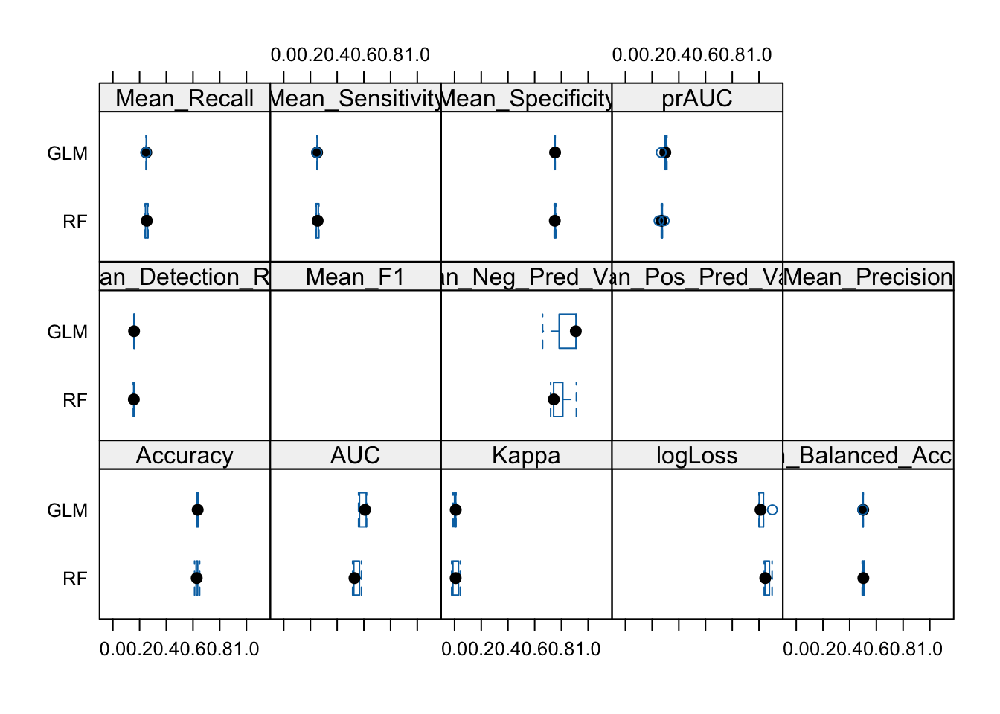

library(tidyverse)
library(caret)Model Selection and Evaluation
# Load training data
train_data <- read_csv(
"/Users/albertkang/Documents/BDSI_2025/imaging-subgroup/data/processed/trainData.csv"
)
# Load variable selection data
var_data <- read_csv(
"/Users/albertkang/Documents/BDSI_2025/imaging-subgroup/results/reports/top_loading_factor_by_subgroup.csv"
)# Extract variable names from variable selection data
variable_list <- as.character(var_data$variable)
# Select relevant variables
model_data <- train_data %>%
select(all_of(variable_list), Mol.Subtype) %>%
mutate(Mol.Subtype = as.factor(make.names(Mol.Subtype)))
str(model_data)tibble [688 × 11] (S3: tbl_df/tbl/data.frame)
$ F1_DT_T1NFS..T11.0.1.T12.0.5. : num [1:688] 1 0.516 0.936 0.553 0.978 ...
$ Median_solidity_Tumor : num [1:688] 0.622 0.867 0.747 0.666 0.62 ...
$ Inv_diff_moment_normalized_Tumor : num [1:688] 0.941 0.974 0.946 0.989 0.962 ...
$ EnhancementClusterNeighborhoodSimilarity_Tumor : num [1:688] 0.733 0.175 0.442 0.743 0.222 ...
$ Enhancement_variance_increasing_rate_Tumor : num [1:688] 2.67 3.11 0.108 0.129 0.122 ...
$ BreastVol : num [1:688] 2046114 1908006 8292885 1399505 2713772 ...
$ Ratio_Tissue_vol_enhancing_more_than_70percent_from_PostCon_to_Tissue_Vol: num [1:688] 0.11898 0.28171 0.20427 0.1373 0.00622 ...
$ PE_map_mean_tumor : num [1:688] 277.3 156.1 100.4 136.5 41.3 ...
$ PE_map_difference_entropy_tissue_PostCon : num [1:688] 0.201 0.519 0.577 0.793 2.455 ...
$ PE_map_std_dev_tissue_PostCon : num [1:688] 280.6 186.5 152 100.3 14.5 ...
$ Mol.Subtype : Factor w/ 4 levels "X0","X1","X2",..: 1 2 1 1 2 1 1 1 2 1 ...# Define the control method for training
control <- trainControl(
method = "cv", # cross-validation
number = 5, # 5-fold CV
classProbs = TRUE, # needed for ROC
summaryFunction = multiClassSummary # for categorical classification
)set.seed(913) # For reproducibility
# Multinomial Logistic Regression
model_glm <- train(
Mol.Subtype ~ .,
data = model_data,
method = "multinom",
trControl = control,
preProcess = c("center", "scale"),
tuneLength = 10
)# weights: 48 (33 variable)
initial value 762.461899
iter 10 value 576.391236
iter 20 value 543.114423
iter 30 value 530.638638
iter 40 value 529.835514
final value 529.831981
converged
# weights: 48 (33 variable)
initial value 762.461899
iter 10 value 580.657732
iter 20 value 543.603894
iter 30 value 532.243350
iter 40 value 531.304343
final value 531.297967
converged
# weights: 48 (33 variable)
initial value 762.461899
iter 10 value 578.210635
iter 20 value 543.326391
iter 30 value 531.277168
iter 40 value 530.458424
final value 530.455733
converged
# weights: 48 (33 variable)
initial value 762.461899
iter 10 value 577.162101
iter 20 value 543.206816
iter 30 value 530.897018
iter 40 value 530.098916
final value 530.096037
converged
# weights: 48 (33 variable)
initial value 762.461899
iter 10 value 576.716955
iter 20 value 543.154089
iter 30 value 530.745509
iter 40 value 529.946817
final value 529.943517
converged
# weights: 48 (33 variable)
initial value 762.461899
iter 10 value 576.528706
iter 20 value 543.131288
iter 30 value 530.683328
iter 40 value 529.882496
final value 529.879049
converged
# weights: 48 (33 variable)
initial value 762.461899
iter 10 value 576.449227
iter 20 value 543.121561
iter 30 value 530.657417
iter 40 value 529.855335
final value 529.851835
converged
# weights: 48 (33 variable)
initial value 762.461899
iter 10 value 576.415694
iter 20 value 543.117438
iter 30 value 530.646545
iter 40 value 529.843874
final value 529.840355
converged
# weights: 48 (33 variable)
initial value 762.461899
iter 10 value 576.401551
iter 20 value 543.115695
iter 30 value 530.641970
iter 40 value 529.839040
final value 529.835513
converged
# weights: 48 (33 variable)
initial value 762.461899
iter 10 value 576.395586
iter 20 value 543.114960
iter 30 value 530.640043
iter 40 value 529.837001
final value 529.833471
converged
# weights: 48 (33 variable)
initial value 762.461899
iter 10 value 587.907271
iter 20 value 545.137676
iter 30 value 536.345949
iter 40 value 535.810285
final value 535.806673
converged
# weights: 48 (33 variable)
initial value 762.461899
iter 10 value 591.764913
iter 20 value 544.851234
iter 30 value 537.595149
iter 40 value 537.147161
final value 537.146082
converged
# weights: 48 (33 variable)
initial value 762.461899
iter 10 value 589.538848
iter 20 value 544.929783
iter 30 value 536.905047
iter 40 value 536.379757
final value 536.375412
converged
# weights: 48 (33 variable)
initial value 762.461899
iter 10 value 588.596312
iter 20 value 545.037430
iter 30 value 536.757675
iter 40 value 536.050577
final value 536.047220
converged
# weights: 48 (33 variable)
initial value 762.461899
iter 10 value 588.198027
iter 20 value 545.093396
iter 30 value 536.489397
iter 40 value 535.911662
final value 535.908239
converged
# weights: 48 (33 variable)
initial value 762.461899
iter 10 value 588.029916
iter 20 value 545.118664
iter 30 value 536.401552
iter 40 value 535.853101
final value 535.849526
converged
# weights: 48 (33 variable)
initial value 762.461899
iter 10 value 587.958996
iter 20 value 545.129600
iter 30 value 536.368764
iter 40 value 535.828350
final value 535.824748
converged
# weights: 48 (33 variable)
initial value 762.461899
iter 10 value 587.929084
iter 20 value 545.134260
iter 30 value 536.355469
iter 40 value 535.817904
final value 535.814296
converged
# weights: 48 (33 variable)
initial value 762.461899
iter 10 value 587.916470
iter 20 value 545.136234
iter 30 value 536.349947
iter 40 value 535.813498
final value 535.809888
converged
# weights: 48 (33 variable)
initial value 762.461899
iter 10 value 587.911150
iter 20 value 545.137068
iter 30 value 536.347632
iter 40 value 535.811640
final value 535.808029
converged
# weights: 48 (33 variable)
initial value 762.461899
iter 10 value 591.725895
iter 20 value 551.160563
iter 30 value 534.950475
iter 40 value 534.199068
final value 534.194065
converged
# weights: 48 (33 variable)
initial value 762.461899
iter 10 value 597.341931
iter 20 value 551.360699
iter 30 value 535.989507
iter 40 value 535.564318
final value 535.554311
converged
# weights: 48 (33 variable)
initial value 762.461899
iter 10 value 594.093926
iter 20 value 551.186197
iter 30 value 536.268955
iter 40 value 534.781213
final value 534.771964
converged
# weights: 48 (33 variable)
initial value 762.461899
iter 10 value 592.723876
iter 20 value 551.152781
iter 30 value 535.210038
iter 40 value 534.443826
final value 534.438547
converged
# weights: 48 (33 variable)
initial value 762.461899
iter 10 value 592.146590
iter 20 value 551.153120
iter 30 value 535.115131
iter 40 value 534.307555
final value 534.297303
converged
# weights: 48 (33 variable)
initial value 762.461899
iter 10 value 591.903271
iter 20 value 551.156636
iter 30 value 534.978136
iter 40 value 534.243663
final value 534.237625
converged
# weights: 48 (33 variable)
initial value 762.461899
iter 10 value 591.800689
iter 20 value 551.158765
iter 30 value 534.961651
iter 40 value 534.217605
final value 534.212438
converged
# weights: 48 (33 variable)
initial value 762.461899
iter 10 value 591.757434
iter 20 value 551.159779
iter 30 value 534.955104
iter 40 value 534.206832
final value 534.201814
converged
# weights: 48 (33 variable)
initial value 762.461899
iter 10 value 591.739195
iter 20 value 551.160228
iter 30 value 534.952412
iter 40 value 534.202333
final value 534.197333
converged
# weights: 48 (33 variable)
initial value 762.461899
iter 10 value 591.731504
iter 20 value 551.160421
iter 30 value 534.951289
iter 40 value 534.200443
final value 534.195443
converged
# weights: 48 (33 variable)
initial value 763.848193
iter 10 value 590.681136
iter 20 value 545.763353
iter 30 value 538.727957
iter 40 value 538.476821
final value 538.476072
converged
# weights: 48 (33 variable)
initial value 763.848193
iter 10 value 594.065175
iter 20 value 546.646065
iter 30 value 540.007715
iter 40 value 539.823503
final value 539.822782
converged
# weights: 48 (33 variable)
initial value 763.848193
iter 10 value 592.124026
iter 20 value 546.114871
iter 30 value 539.353098
iter 40 value 539.050634
final value 539.047910
converged
# weights: 48 (33 variable)
initial value 763.848193
iter 10 value 591.292386
iter 20 value 545.904362
iter 30 value 538.938149
iter 40 value 538.718395
final value 538.717929
converged
# weights: 48 (33 variable)
initial value 763.848193
iter 10 value 590.939391
iter 20 value 545.821660
iter 30 value 538.816709
iter 40 value 538.578923
final value 538.578190
converged
# weights: 48 (33 variable)
initial value 763.848193
iter 10 value 590.790129
iter 20 value 545.787740
iter 30 value 538.765430
iter 40 value 538.519906
final value 538.519158
converged
# weights: 48 (33 variable)
initial value 763.848193
iter 10 value 590.727113
iter 20 value 545.773601
iter 30 value 538.743769
iter 40 value 538.494981
final value 538.494245
converged
# weights: 48 (33 variable)
initial value 763.848193
iter 10 value 590.700527
iter 20 value 545.767668
iter 30 value 538.734627
iter 40 value 538.484479
final value 538.483736
converged
# weights: 48 (33 variable)
initial value 763.848193
iter 10 value 590.689313
iter 20 value 545.765171
iter 30 value 538.730770
iter 40 value 538.480050
final value 538.479304
converged
# weights: 48 (33 variable)
initial value 763.848193
iter 10 value 590.684584
iter 20 value 545.764119
iter 30 value 538.729143
iter 40 value 538.478183
final value 538.477435
converged
# weights: 48 (33 variable)
initial value 763.848193
iter 10 value 586.156965
iter 20 value 548.820892
iter 30 value 539.558800
iter 40 value 538.838138
final value 538.833786
converged
# weights: 48 (33 variable)
initial value 763.848193
iter 10 value 589.806407
iter 20 value 549.139759
iter 30 value 540.536559
iter 40 value 540.169424
final value 540.164175
converged
# weights: 48 (33 variable)
initial value 763.848193
iter 10 value 587.717969
iter 20 value 549.102107
iter 30 value 539.729350
iter 40 value 539.399003
final value 539.398387
converged
# weights: 48 (33 variable)
initial value 763.848193
iter 10 value 586.819154
iter 20 value 548.992109
iter 30 value 539.397996
iter 40 value 539.073055
final value 539.072525
converged
# weights: 48 (33 variable)
initial value 763.848193
iter 10 value 586.436904
iter 20 value 548.897436
iter 30 value 539.263563
iter 40 value 538.935608
final value 538.934578
converged
# weights: 48 (33 variable)
initial value 763.848193
iter 10 value 586.275138
iter 20 value 548.853363
iter 30 value 539.209897
iter 40 value 538.877185
final value 538.876310
converged
# weights: 48 (33 variable)
initial value 763.848193
iter 10 value 586.206820
iter 20 value 548.834575
iter 30 value 539.488800
iter 40 value 538.858199
final value 538.851722
converged
# weights: 48 (33 variable)
initial value 763.848193
iter 10 value 586.177993
iter 20 value 548.826657
iter 30 value 539.518008
iter 40 value 538.847942
final value 538.841350
converged
# weights: 48 (33 variable)
initial value 763.848193
iter 10 value 586.165833
iter 20 value 548.823322
iter 30 value 539.540203
iter 40 value 538.841779
final value 538.836976
converged
# weights: 48 (33 variable)
initial value 763.848193
iter 10 value 586.160705
iter 20 value 548.821917
iter 30 value 539.550734
iter 40 value 538.839667
final value 538.835131
convergedWarning in nominalTrainWorkflow(x = x, y = y, wts = weights, info = trainInfo,
: There were missing values in resampled performance measures.# weights: 48 (33 variable)
initial value 953.770520
iter 10 value 823.479663
iter 20 value 721.442603
iter 30 value 677.617862
iter 40 value 674.312433
final value 674.274042
converged# Random Forest
model_rf <- train(
Mol.Subtype ~ .,
data = model_data,
method = "rf",
trControl = control,
preProcess = c("center", "scale"),
tuneLength = 10
)note: only 9 unique complexity parameters in default grid. Truncating the grid to 9 .Warning in nominalTrainWorkflow(x = x, y = y, wts = weights, info = trainInfo,
: There were missing values in resampled performance measures.# Compare models
results <- resamples(list(GLM = model_glm, RF = model_rf))
summary(results)
Call:
summary.resamples(object = results)
Models: GLM, RF
Number of resamples: 5
Accuracy
Min. 1st Qu. Median Mean 3rd Qu. Max. NA's
GLM 0.6304348 0.6304348 0.6350365 0.6351846 0.6376812 0.6423358 0
RF 0.6115108 0.6231884 0.6277372 0.6294216 0.6350365 0.6496350 0
AUC
Min. 1st Qu. Median Mean 3rd Qu. Max. NA's
GLM 0.5603658 0.5671602 0.6087994 0.5948944 0.6176391 0.6205075 0
RF 0.5160010 0.5249772 0.5298489 0.5439334 0.5668483 0.5819915 0
Kappa
Min. 1st Qu. Median Mean 3rd Qu. Max. NA's
GLM -0.01077122 0.00000000 0.008826508 0.003633559 0.009151292 0.01096121 0
RF -0.02164149 -0.01227253 0.008232789 0.009263799 0.029372694 0.04262753 0
logLoss
Min. 1st Qu. Median Mean 3rd Qu. Max. NA's
GLM 1.000274 1.001857 1.011759 1.029610 1.033836 1.100324 0
RF 1.039199 1.046010 1.047080 1.061772 1.078273 1.098297 0
Mean_Balanced_Accuracy
Min. 1st Qu. Median Mean 3rd Qu. Max. NA's
GLM 0.4974734 0.5000000 0.5013739 0.5003508 0.5014249 0.5014820 0
RF 0.4938548 0.4963405 0.5024773 0.5021789 0.5073587 0.5108634 0
Mean_Detection_Rate
Min. 1st Qu. Median Mean 3rd Qu. Max. NA's
GLM 0.1576087 0.1576087 0.1587591 0.1587961 0.1594203 0.1605839 0
RF 0.1528777 0.1557971 0.1569343 0.1573554 0.1587591 0.1624088 0
Mean_F1
Min. 1st Qu. Median Mean 3rd Qu. Max. NA's
GLM NA NA NA NaN NA NA 5
RF NA NA NA NaN NA NA 5
Mean_Neg_Pred_Value
Min. 1st Qu. Median Mean 3rd Qu. Max. NA's
GLM 0.6590897 0.8453897 0.9079500 0.8463062 0.9088665 0.9102351 1
RF 0.7195333 0.7417472 0.7430538 0.7854315 0.8107498 0.9120733 0
Mean_Pos_Pred_Value
Min. 1st Qu. Median Mean 3rd Qu. Max. NA's
GLM NA NA NA NaN NA NA 5
RF NA NA NA NaN NA NA 5
Mean_Precision
Min. 1st Qu. Median Mean 3rd Qu. Max. NA's
GLM NA NA NA NaN NA NA 5
RF NA NA NA NaN NA NA 5
Mean_Recall
Min. 1st Qu. Median Mean 3rd Qu. Max. NA's
GLM 0.2471591 0.2500000 0.2500000 0.2494318 0.2500000 0.2500000 0
RF 0.2414773 0.2443182 0.2542529 0.2526295 0.2596154 0.2634836 0
Mean_Sensitivity
Min. 1st Qu. Median Mean 3rd Qu. Max. NA's
GLM 0.2471591 0.2500000 0.2500000 0.2494318 0.2500000 0.2500000 0
RF 0.2414773 0.2443182 0.2542529 0.2526295 0.2596154 0.2634836 0
Mean_Specificity
Min. 1st Qu. Median Mean 3rd Qu. Max. NA's
GLM 0.7477876 0.7500000 0.7527477 0.7512698 0.7528498 0.7529640 0
RF 0.7462323 0.7483628 0.7507017 0.7517284 0.7551020 0.7582432 0
prAUC
Min. 1st Qu. Median Mean 3rd Qu. Max. NA's
GLM 0.2683241 0.2977098 0.2988547 0.2960317 0.3044340 0.3108361 0
RF 0.2514957 0.2694847 0.2704769 0.2718314 0.2768427 0.2908569 0bwplot(results)